Chapter 11 Unsupervised Learning
Unsupervised vs. supervised learning
Most of this course focuses on supervised learning methods such as regression and classification.
Is that setting we observe both a set of features \(X_1, X_2, \ldots, X_p\) for each object, as well as a response or outcome variable \(Y\).
- The goal is then to predict \(Y\) using \(X_1, X_2, \ldots, X_p\).
Here we instead focus on unsupervised learning, we where observe only the features \(X_1, X_2, \ldots, X_p\).
- We are not interested in prediction, because we do not have an associated response variable \(Y\).
The goals of unsupervised learning
- The goal is to discover interesting things about the measurements: is there an informative way to visualize the data?
- Can we discover subgroups among the variables or among the observations?
- We discuss two methods:
- Principal components analysis, a tool used for data visualization or data pre-processing before supervised techniques are applied, and
- Clustering, a broad class of methods for discovering unknown subgroups in data.
The challenge of unsupervised learning
Unsupervised learning is more subjective than supervised learning, as there is no simple goal for the analysis, such as prediction of a response.
But techniques for unsupervised learning are of growing importance in a number of fields:
- Subgroup of breast cancer patients grouped by their gene expression measurements,
- Groups of shoppers characterized by their browsing and purchase histories,
- Movies grouped by the ratings assigned by movie viewers.
Another advantage
It is often easier to obtain unlabeled data - from a lab instrument or a computer - than labeled data, which can require human intervention.
For example it is difficult to automatically assess the overall sentiment of a movie review: is it favorable or not?
11.1 Principal Components Anlsysis
PCA produces a low-dimensional representation of a dataset.
- It finds a sequence of linear combinations of the variables that have maximal variance, and are mutually uncorrelated.
Apart from producing derived variables for use in supervised learning problems, PCA also serves as a tool for data visualization.
The first principal component of a set of features \(X_1, X_2, \ldots, X_p\) is the normalized linear combination of the features
\[ Z_1=\phi_{11}X_1 +\phi_{21}X_2+\cdots +\phi_{p1}X_p \]
that has the largest variance.
By normalized, we mean that \(\sum_{j=1}^p\phi_{j1}^2\).
We refer to the elements \(\phi_{11},\ldots,\phi_{p1}\) as the loadings of the first principal component; together, the loadings make up the principal component loading vector, \(\phi_1 = (\phi_{11} \phi_{21}\ldots \phi_{p1})^T\).
We constrain the loadings so that their sum of squares is equal to one, since otherwise setting these elements to be arbitrarily large in absolute value could result in an arbitrarily large variance.
PCA: example
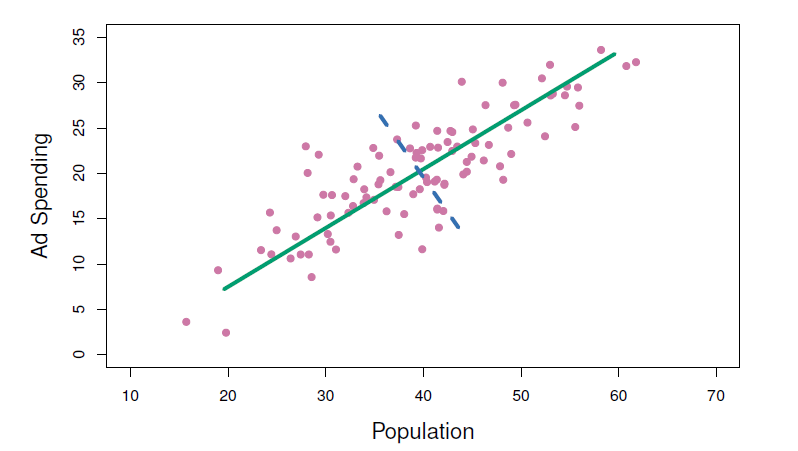
The population size (pop) and ad spending (ad) for 100 different cities are shown as purple circles.
The green solid line indicates the first principal component direction, and the blue dashed line indicates the second principal component direction.
Computation of principal components
- Suppose we have a \(n\times p\) data set \(X\).
- Since we are only interested in variance, we assume that each of the variables in \(X\) has been centered to have mean zero (that is, the column means of \(X\) are zero).
- We then look for the linear combination of the sample feature values of the form
\[ z_{i1}=\phi_{11}x_{i1}+\phi_{21}x_{i2}+\cdots +\phi_{p1}x_{ip} \]
for \(i=1,\ldots, n\) that has largest sample variance, subject to the constraint that \(\sum_{j=1}^p \phi_{j1}^2=1\).
- Since each of the \(x_{ij}\) has mean zero, then so does \(z_{i1}\) (for any values of \(\phi_{j1}\)).
- Hence the sample variance of the \(z_{i1}\) can be written as \(\frac{1}{n}\sum_{i=1}^n z_{i1}^2\).
- Plugging the first principal component loading vector solves the optimization problem
\[ maximize_{\phi_{11},\ldots,\phi_{p1}}\frac{1}{n}\sum_{i=1}^n(\sum_{j=1}^p \phi_{j1}x_{ij})^2 \,\,\, subject \,\,\, to \,\,\, \sum_{j=1}^p \phi_{j1}^2=1 \]
This problem can be solved via a singular-value decomposition of the matrix \(X\), a standard technique in linear algebra.
We refer to \(Z_1\) as the first principal component, with realized values \(z_{11},\ldots, z_{n1}\).
Geometry of PCA
The loading vector \(\phi_1\) with elements \(\phi_{11},\phi_{21}, \ldots,\phi_{p1}\) defines a direction in feature space along which the data vary the most.
If we project the \(n\) data points \(x_1, \ldots, x_n\) onto this direction, the projected values are the principal component scores \(z_{11},\ldots,z_{n1}\) themselves.
The second principal component is the linear combination of \(x_1, \ldots, X_p\) that has maximal variance among all linear combinations that after uncorrelated with \(Z_1\).
The second principal component scores \(z_{12}, z_{22},\ldots, z_{n2}\) take the form
\[ z_{i2}=\phi_{12}x_{i1}+\phi_{22}x_{i2}+\cdots +\phi_{p2}x_{ip} \]
where \(\phi_2\) is the second principal component loading vector, with elements \(\phi_{12},\phi_{22}, \ldots,\phi_{p2}\).
It turns out that constraining \(Z_2\) to be uncorrelated with \(Z_1\) is equivalent to constraining the direction \(\phi_2\) to be orthogonal (perpendicular) to the direction \(\phi_1\). And so on.
The principal component directions \(\phi_1, \phi_2, \phi_3, \ldots\) are the ordered sequence of right singular vectors of the matrix \(X\), and the variances of the components are \(\frac{1}{n}\) times the squares of the singular values.
- There are at most \(min(n-1,p)\) principal components.
Illustration
USAarrests data: For each of the fifty states in the United States, the data set contains the number of arrests per 100,000 residents for each of three crimes: Assault, Murder, and Rape.
- We also record UrbanPop (the percent of the population in each state living in urban areas).
The principal component score vectors have length \(n=50\), and the principal component loading vectors have length \(p=4\).
PCA was performed after standardizing each variable to have mean zero and standard deviation one.
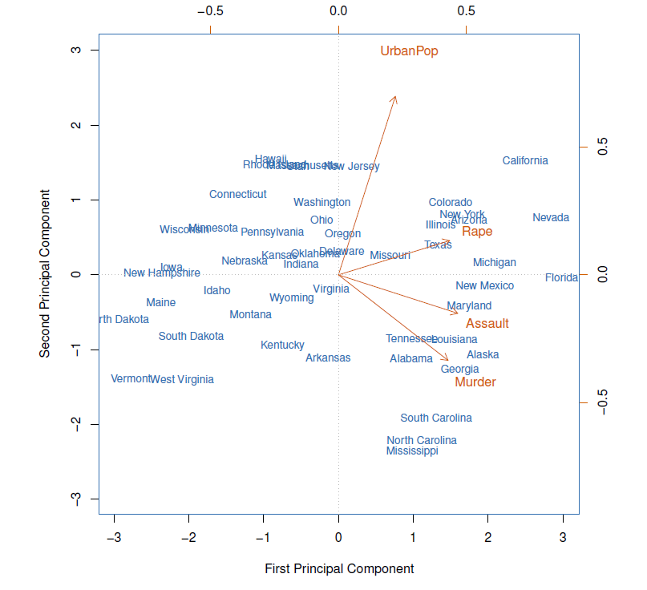
- The first two principal components for the ISArrests data.
- The blue state names represent the scores for the first two principal components.
- The orange arrows indicate the first two principal component loading vectors (with axes on the top and right).
- For example, the loading for Rape on the first component is 0.54, and its loading on the second principal component 0.17 [the word Rape is centered at the point (0.54, 0.17)].
- This figure is known as a biplot, because it displays both the principal component scores and the principal component loadings.
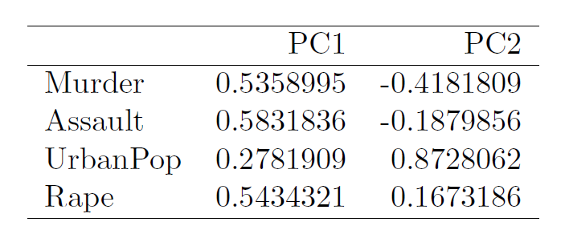
Another interpretation of principal components
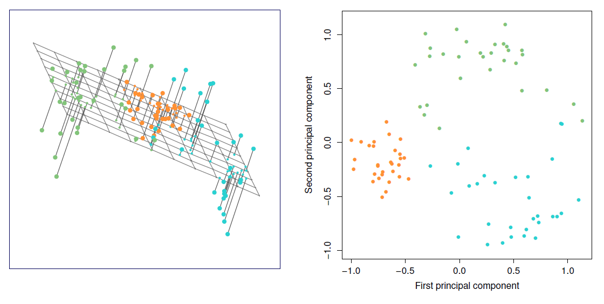
The first principal component loading vector has a very special property: it defines the line in \(p\)-dimensional space that is closest to then \(n\) observations (using average squared Euclidean distance as a measure of closeness).
The notion of principal components as the dimensions that are closest to the \(n\) observations extends beyond just the first principal component.
For instance, the first two principal components of a data set span the plane that is closest to the \(n\) observations, in terms of average squared Euclidean distance.
Scaling of the variables matters
If the variables are in different units, scaling each to have standard deviation equal to one is recommended.
If they are in the same units, you might or might not scale the variables.

Proportion variance explained
To understand the strength of each component, we are intereste in knowing the proportion of variance explained (PVE) by each one.
The total variance present in a data set (assuming that the variables have been centered to have mean zero) is defined as
\[ \sum_{j=1}^p Var(X_j)=\sum_{j=1}^p\frac{1}{n}\sum_{i=1}^n x_{ij}^2 \]
and the variance explained by the \(m\)th principal component is
\[ Var(Z_m)=\frac{1}{n}\sum_{i=1}^n z_{im}^2 \]
It can be shown that \(\sum_{j=1}^p Var(x_j)=\sum_{m=1}^M Var(Z_m)\), with \(M=min(n-1,p)\).
Therefore, the PVE of the \(m\)th principal component is given by the positive quantity between 0 and 1
\[ \frac{\sum_{i=1}^n z_{im}^2}{\sum_{j=1}^p \sum_{i=1}^n x_{ij}^2} \]
- The PVEs sum to one. We sometimes disply the cumulative PVEs.
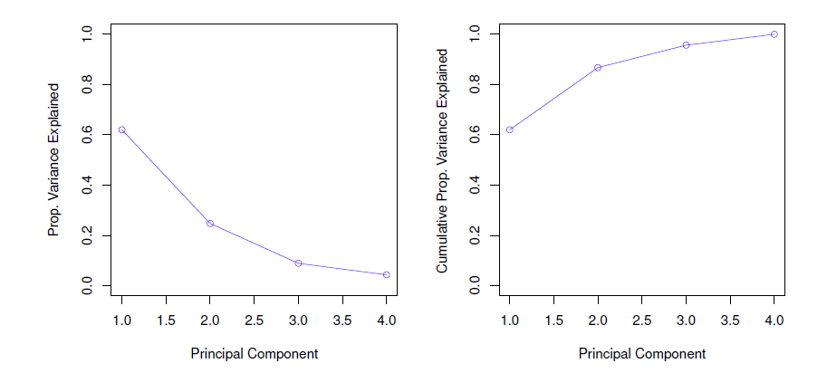
How many principal components should we use?
- If we use principle components as a summary of our data, how many components are sufficient?
- No simple answer to this question, as cross-validation is not available for this purpose.
- Why not?
- When could we use cross-validation to select the number of components?
- The “scree plot” on the previous slide can be used as a guide: we look for an “elbow”.
- No simple answer to this question, as cross-validation is not available for this purpose.
Example
Crime rates in the USA in 1973 per 100,000 perple and urban population percentages by states.
Using apply(), we can compute e.g. means and variances:
colnames(USArrests) # variables## [1] "Murder" "Assault" "UrbanPop" "Rape"round(apply(X = USArrests, MARGIN = 2, FUN = mean), digits = 2) # average crime rates## Murder Assault UrbanPop Rape
## 7.79 170.76 65.54 21.23round(apply(USArrests, 2, var), 1) # variances## Murder Assault UrbanPop Rape
## 19.0 6945.2 209.5 87.7Means and in particular variances differ vastly.
Function prcomp() belongs again into the default package (stat) and performs basic PCA.
pca.out <- princomp(x = USArrests, cor = TRUE) # extract compontents using correlation matrix
summary(pca.out)## Importance of components:
## Comp.1 Comp.2 Comp.3 Comp.4
## Standard deviation 1.5748783 0.9948694 0.5971291 0.41644938
## Proportion of Variance 0.6200604 0.2474413 0.0891408 0.04335752
## Cumulative Proportion 0.6200604 0.8675017 0.9566425 1.00000000- The two first components explain 86.8 % of the total variation (the first component explains 62 %).
names(pca.out) # quantities produced by princomp()## [1] "sdev" "loadings" "center" "scale" "n.obs" "scores" "call"- center and scale are used (here mean and standard deviation) are used to standardize the variables (sdev contains standard deviations (square roots of the eigenvalues) of the components printed in the above summary).
round(pca.out$center, 2) # means## Murder Assault UrbanPop Rape
## 7.79 170.76 65.54 21.23round(pca.out$scale, 2) # standard deviations## Murder Assault UrbanPop Rape
## 4.31 82.50 14.33 9.27- loadings contain the eigenvectors.
round(loadings(pca.out), 3) # eigenvectors in R!##
## Loadings:
## Comp.1 Comp.2 Comp.3 Comp.4
## Murder 0.536 0.418 0.341 0.649
## Assault 0.583 0.188 0.268 -0.743
## UrbanPop 0.278 -0.873 0.378 0.134
## Rape 0.543 -0.167 -0.818
##
## Comp.1 Comp.2 Comp.3 Comp.4
## SS loadings 0.999 1.00 1.00 0.999
## Proportion Var 0.250 0.25 0.25 0.250
## Cumulative Var 0.250 0.50 0.75 1.000The loadings of the first component are roughly the same for the three criminality measures, and much less weight on UrbanPop.
Thus, the first component represents overall (serious) criminality (high values on this component indicate high rates of these kinds of serious criminality in the state).
The second component represents the level of urbanization of the state (because of the negative sign, high negative values on the component indicate high urbanization, therefore in order to make interpretation more intuitive it is better to reverse the signs of the loadings, here we do not change the signs).
scores contains the principal component scores.
Using the function biblot() the first two components can be plotted.
biplot(pca.out, col = c("steel blue", "red"), # colors for the sate and variable names
scale = 0, # arrow lengths represent the loadings
xlab = "PC1", ylab = "PC2", cex = .8)
From the biplot we find that on the first component for example Florida, Nevada, and California obtain high scores, suggesting that criminality rates in those states tend to be higher than in the others.
Mississippi, North Carolina, and South Caroline obtain high scores on the second component, so because of the negative loading, these states are less urbanized (criminality is there still to some extend above average (positive side on the first PC).
11.2 Clustering
Clustering refers to a very broad set of techniques for finding subgroups, or clusters, in a data set.
We seek a partition of the data into distinct groups so that the observations within each group are quite similar to each other.
It make this concrete, we must define what it means for two or more observations to be similar or different.
Indeed, this is often a domain-specific consideration that must be made based on knowledge of the data being studied.
11.2.0.1 PCA vs Clustering
PCA looks for a low-dimensional representation of the observations that explains a good fraction of the variance.
Clustering looks for homogeneous subgroups among the observations.
Clustering for market segmentation
Suppose we have access to a large number of measurements (e.g. median household income, occupation, distance from nearest urban area, and so forth) for a large number of people.
Our goal is to perform market segmentation by identifying subgroups of people who might be more receptive to a particular form of advertising, or more likely to purchase a particular product.
The task of performing market segmentation amounts to clustering the perple in the data set.
Two clustering methods
In \(K\)-means clustering, we seek to partition the observations into a pre-specified number of clusters.
In hierarchical clustering, we do not know in advance how many clusters we want; in fact, we end up with a tree-like visual representation of the observations, called a dendrogram, that allows us to view at once the clusterings obtained for each possible number of clusters, from 1 to \(n\).
11.2.1 \(K\)-means clustering
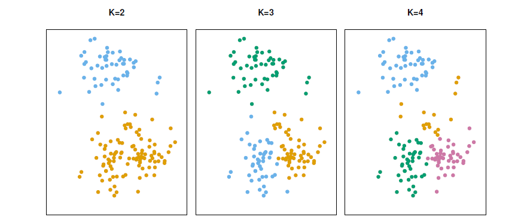
A simulated data set with 150 observations in 2-dimensional space.
Panels show the results of applying \(K\)-means clustering with different values of \(K\), the number of clusters.
The color of each observation indicates the cluster to which it was assigned using the \(K\)-means clustering algorithm.
Note that there is no ordering of the clusters, so the cluster coloring is arbitrary.
These cluster labels were not used in clustering; instead, they are the outputs of the clustering procedure.
11.2.1.1 Details of \(K\)-means clustering
Let \(C_1, \ldots, C_k\) denotes sets containing the indices of the observations in each cluster.
These sets satisfy two properties:
\(C_1 \cup C_2 \cup \ldots \cup C_K=\{1,\ldots,n \}\), In other words, each observation belongs to at least one of the \(K\) clusters.
\(C_k\cap C_{k'}=\phi\) for all \(k \ne k'\). In other words, the clusters are non-overlapping: no observation belongs to more than one cluster.
For instance, if the \(i\)th observation is in the \(k\)th cluster, then \(i\in C_k\).
The idea behind \(K\)-means clustering is that a good clustering is one for which the within-cluster variation is as small as possible.
The within-cluster variation for cluster \(C_k\) is a measure \(WCV(C_k)\) of the amount by which the observations within a cluster differ from each other.
Hence we want to solve the problem
\[ minimize_{C_1,\ldots,C_k}\{\sum_{k=1}^K WCV(C_k) \} \]
- In other words, this formula says that we want to partition the observations into \(K\) cluster such that the total within-cluster variation, summed over all \(K\) clusters, is a small as possible.
How to define within-cluster variation?
- Typically we use Euclidean distance
\[ WCV(C_k)=\frac{1}{|C_k|}\sum_{i,i'\in C_k}\sum_{j=1}^p (x_{ij}-x_{i'j})^2 \]
where \(|C_k|\) denotes the number of observations in the \(k\)th cluster.
- Combining two equations gives the optimization problem that defines \(K\)-means clustering,
\[ minimize_{C_1,\ldots,C_k}\{\sum_{k=1}^K \frac{1}{|C_k|}\sum_{i,i'\in C_k}\sum_{j=1}^p (x_{ij}-x_{i'j})^2 \} \]
\(K\)-means clustering algorithm
Randomly assign a number, from 1 to \(k\), to each of the observation. These serve as initial cluster assignments for the observations.
Iterate until the cluster assignments stop changing:
2.1 For each of the \(K\) clusters, compute the cluster centroid. The \(k\)th cluster centroid is the vector of the \(p\) feature means for the observations in the \(k\)th cluster.
2.2 Assign each observation to the cluster whose centroid is closest (where closest is defined using Euclidean distance).
Properties of the Algorithm
This algorithm is guaranteed to decrease the value of the objective function at each step. Why?
Note that
\[ \frac{1}{|C_k|}\sum_{i,i'\in C_k}\sum_{j=1}^p (x_{ij}-x_{i'j})^2=2\sum_{i\in C_k}\sum_{j=1}^p (x_{ij}-\bar{x}_{kj})^2 \] where \(\bar{x}_{kj}=\frac{1}{|C_k|} \sum_{i\in C_k}x_{ij}\) is the mean for feature \(j\) in cluster \(C_k\).
- However it is not guaranteed to give the global minimum. Why not?
Example
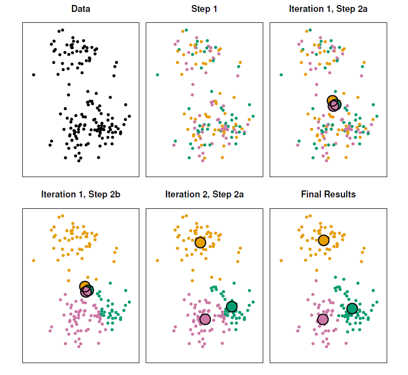
- The progress of the \(K\)-means algorithm with \(K=3\).
- Top left: The observations are shown.
- Top center: In Step 1 of the algorithm, each observation is randomly assigned to a cluster.
- Top right: In Step 2(a), the cluster centroids are computed. These are shown as large colored disks. Initially the centroids are almost completely overlapping because the initial cluster assignments were chosen at random.
- Bottom left: In Step 2(b), each observation is assigned to the nearest centroid.
- Bottom center: Step 2(a) is once again performed, leading to new cluster centroids.
- Bottom right: The results obtained after 10 iterations.
Example: different starting values
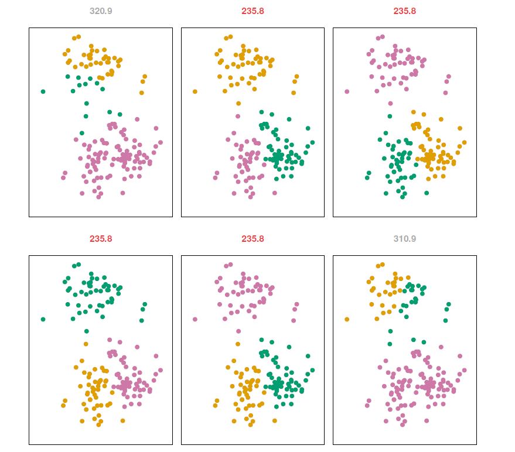
\(K\)-means clustering performed six times on the data from previous figure with \(K=3\), each time with a different random assignment of the observations in Step 1 of the \(K\)-means algorithm.
Above each plot is the value of the objective function.
Three different local optima were obtained, one of which resulted in a smaller value of the objective and provides better separation between the clusters.
Those labeled in red all achieved the same best solution, with an objective value of 235.8.
Example - Beer data
beer <- read.table(header = TRUE, sep = ",", stringsAsFactors = FALSE,
text = "
beer, calories, sodium, alcohol, cost
Budweiser, 144, 15, 4.7, 0.43
Schlitz, 151, 19, 4.9, 0.43
Lowenbrau, 157, 15, 0.9, 0.48
Kronenbourg, 170, 7, 5.2, 0.73
Heineken, 152, 11, 5.0, 0.77
Old Milwaukee, 145, 23, 4.6, 0.28
Augsberger, 175, 24, 5.5, 0.40
Srohs Bohemian Style, 149, 27, 4.7, 0.42
Miller Lite, 99, 10, 4.3, 0.43
Budweiser Light, 113, 8, 3.7, 0.40
Coors, 140, 18, 4.6, 0.44
Coors Light, 102, 15, 4.1, 0.46
Michelob Light, 135, 11, 4.2, 0.50
Becks, 150, 19, 4.7, 0.76
Kirin, 149, 6, 5.0, 0.79
Pabst Extra Light, 68, 15, 2.3, 0.38
Hamms, 139, 19, 4.4, 0.43
Heilemans Old Style, 144, 24, 4.9, 0.43
Olympia Goled Light, 72, 6, 2.9, 0.46
Schlitz Light, 97, 7, 4.2, 0.47
")
rownames(beer) <- beer$beer # use beer brands as rownames
beer$beer <- NULL # drop beer variable
head(beer)## calories sodium alcohol cost
## Budweiser 144 15 4.7 0.43
## Schlitz 151 19 4.9 0.43
## Lowenbrau 157 15 0.9 0.48
## Kronenbourg 170 7 5.2 0.73
## Heineken 152 11 5.0 0.77
## Old Milwaukee 145 23 4.6 0.28A potentially intersting question might be are some beers more alike than the others.
I.e., are there natural groups of the beers.
Before clustering, check descriptive statistics and plots.
library(car) # car library ## 필요한 패키지를 로딩중입니다: carData#library(help = car) # some help about car
round(cor(beer), 3) # correlation matrix ## calories sodium alcohol cost
## calories 1.000 0.415 0.486 0.328
## sodium 0.415 1.000 0.223 -0.433
## alcohol 0.486 0.223 1.000 0.259
## cost 0.328 -0.433 0.259 1.000scatterplotMatrix(beer, smooth = FALSE, regLine = FALSE)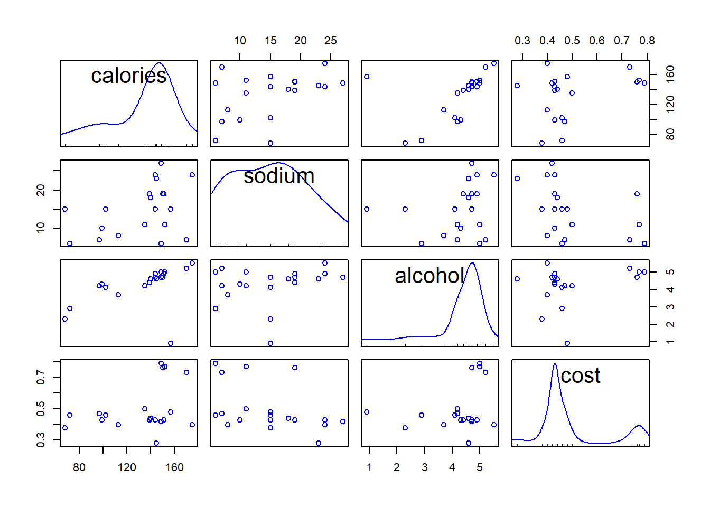
- It turns out that Lowenbrau is an outlier in particular in the relation of alcohol to others.
scatterplot(x = beer$alcohol, y = beer$calories, regLine = FALSE, smooth = FALSE,
boxplots = FALSE, xlim = c(0, 6),
xlab = "Alcohol", ylab = "Calories",
main = "Calories vs Alcohol")
text(x = beer$alcohol, y = beer$calories, labels = rownames(beer),
cex = .8, pos = 2) # add brands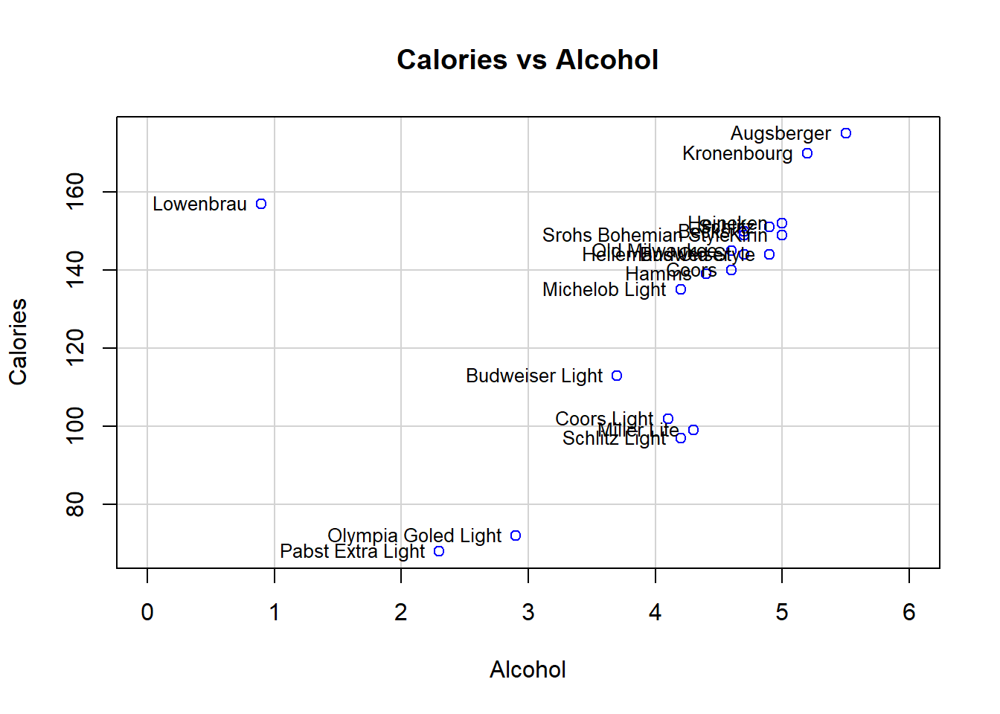
- After removing Lowenbrau, no more obvious outliers.
scatterplotMatrix(beer[rownames(beer) != "Lowenbrau", ], # drop Lowenbrau
smooth = FALSE, regLine = FALSE) # scattrplot without Lowenbrau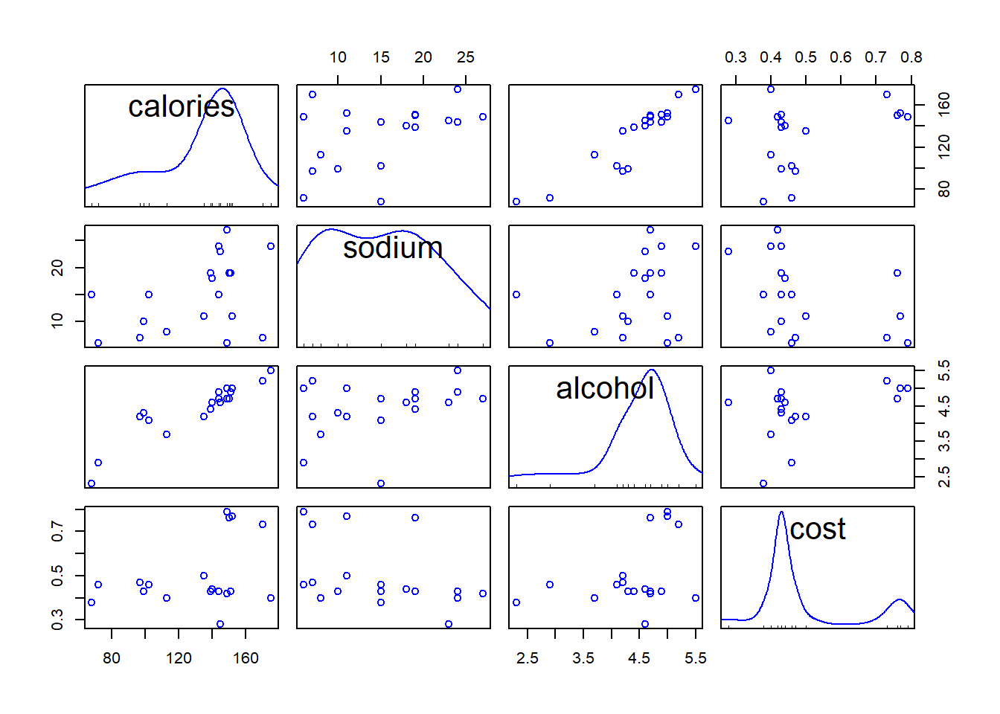
Example - \(K\)-means clustering
km2 <- kmeans(beer, centers = 2, nstart = 50) # K = 2, nstart defines the number of random starts
km2 # print results## K-means clustering with 2 clusters of sizes 6, 14
##
## Cluster means:
## calories sodium alcohol cost
## 1 91.83333 10.16667 3.583333 0.4333333
## 2 150.00000 17.00000 4.521429 0.5207143
##
## Clustering vector:
## Budweiser Schlitz Lowenbrau
## 2 2 2
## Kronenbourg Heineken Old Milwaukee
## 2 2 2
## Augsberger Srohs Bohemian Style Miller Lite
## 2 2 1
## Budweiser Light Coors Coors Light
## 1 2 1
## Michelob Light Becks Kirin
## 2 2 2
## Pabst Extra Light Hamms Heilemans Old Style
## 1 2 2
## Olympia Goled Light Schlitz Light
## 1 1
##
## Within cluster sum of squares by cluster:
## [1] 1672.962 2187.863
## (between_SS / total_SS = 78.9 %)
##
## Available components:
##
## [1] "cluster" "centers" "totss" "withinss" "tot.withinss"
## [6] "betweenss" "size" "iter" "ifault"- Generate the “scree plot” to help finding out an appropriate number of clusters.
## plot within sums of squares for K = 1, 2, 3, ..., 8 (K = 1, no clustering)
ssw <- double(8)
ssw[1] <- km2$totss # total sum of squares represents no clustering
ssw[2] <- km2$tot.withinss # within sum of squares with K = 2
for (k in 3:8) ssw[k] <- kmeans(beer, centers = k, nstart = 50)$tot.withinss # SSWs
plot(ssw, xlab = "Number of Clusters", ylab = "Within Sum of Squares",
main = "Within Sum of Squares 'Scree plot'", font.main = 1, type = "b")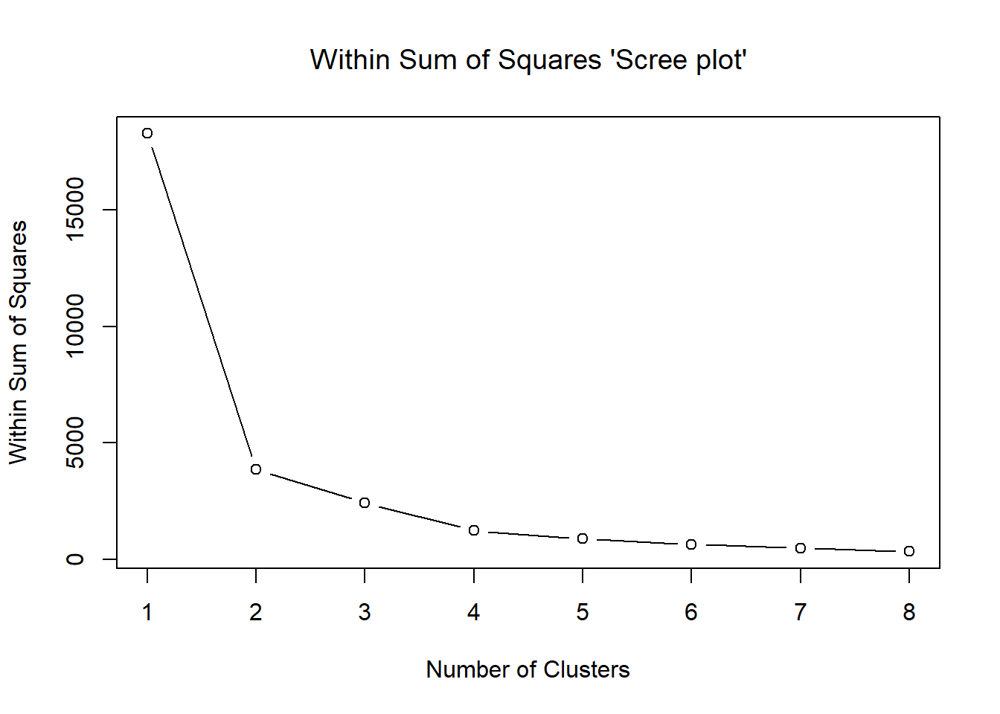
Potential candidates are \(K=2\), \(K=3\), \(K=4\).
Below are some summaries of the results.
## K = 3 and 4 clusterings
km3 <- kmeans(beer, centers = 3, nstart = 50) # K = 3
km4 <- kmeans(beer, centers = 4, nstart = 50) # K = 4
## collect clusterings into a matrix
clmat <- cbind(km2$cluster, km3$cluster, km4$cluster) # matrix of 2 to 4 clusterings
colnames(clmat) <- c("K = 2", "K = 3", "K = 4")
clmat[order(clmat[, "K = 2"]), ] # print results ordered by K = 2 clusters## K = 2 K = 3 K = 4
## Miller Lite 1 3 3
## Budweiser Light 1 3 3
## Coors Light 1 3 3
## Pabst Extra Light 1 2 4
## Olympia Goled Light 1 2 4
## Schlitz Light 1 3 3
## Budweiser 2 1 1
## Schlitz 2 1 1
## Lowenbrau 2 1 1
## Kronenbourg 2 1 2
## Heineken 2 1 1
## Old Milwaukee 2 1 1
## Augsberger 2 1 2
## Srohs Bohemian Style 2 1 1
## Coors 2 1 1
## Michelob Light 2 1 1
## Becks 2 1 1
## Kirin 2 1 1
## Hamms 2 1 1
## Heilemans Old Style 2 1 1With \(K=2\) the clusters consist essentially of ordinary and light beers (similar to hierarchical clustering).
With \(K=3\), the light beers become split into two groups so that in cluster 1 there are only two brands.
Increasing \(K\) to 4, two of the ordinary beers make up a new cluster.
Thus, with \(K=2\) the pattern seems most clear cut.
Below are cluster means of the variables in different solutions.
## cluster means
round(km2$centers, 2)## calories sodium alcohol cost
## 1 91.83 10.17 3.58 0.43
## 2 150.00 17.00 4.52 0.52round(km3$centers, 2)## calories sodium alcohol cost
## 1 150.00 17.0 4.52 0.52
## 2 70.00 10.5 2.60 0.42
## 3 102.75 10.0 4.08 0.44round(km4$centers, 2)## calories sodium alcohol cost
## 1 146.25 17.25 4.38 0.51
## 2 172.50 15.50 5.35 0.56
## 3 102.75 10.00 4.08 0.44
## 4 70.00 10.50 2.60 0.4211.2.2 Hierarchical Clustering
\(K\)-means clustering requires us to pre-specify the number of clusters \(K\).
- This can be a disadvantage.
Hierarchical clustering is an alternative approach which does not require that we commit to a particular choice of \(K\).
In this section, we describe bottom-up or agglomerative clustering.
- This is the most common type of hierarchical clustering, and refers to the fact that a dendrogram is built starting from the leaves and combining clusters up to the trunk.
11.2.2.1 Hierarchical clustering: the idea
- Builds a hierarchy in a “bottom-up” fashion…
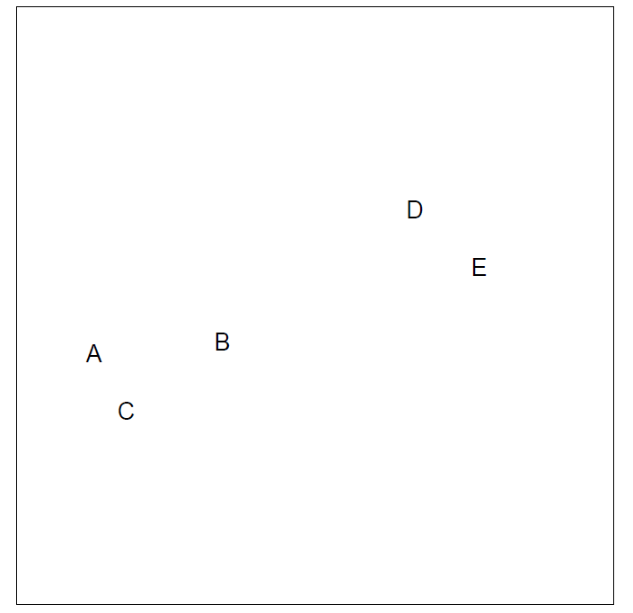
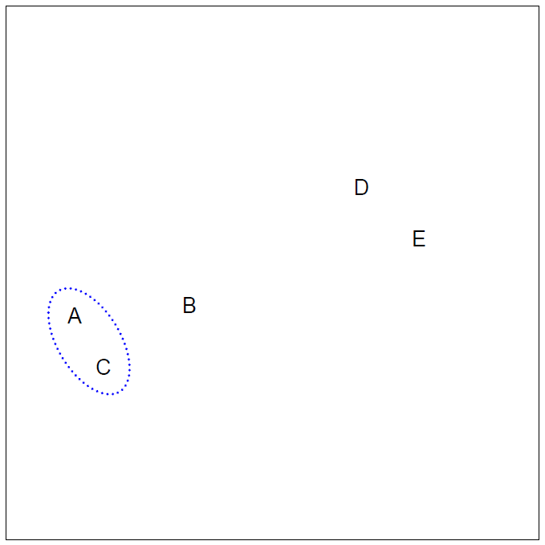
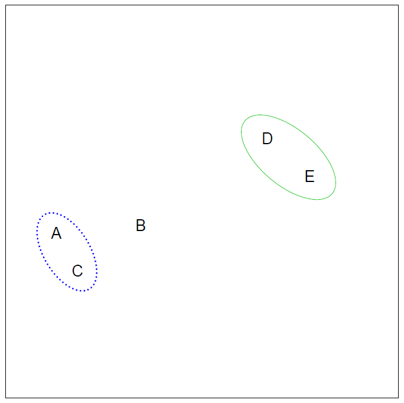

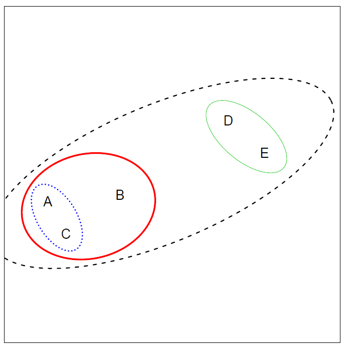
Hierarchical clustering algorithm
- The approach in words:
- Start with each point in its own cluster.
- Identify the closest two clusters and merge them.
- Repeat.
- Ends when all points are in a single cluster.
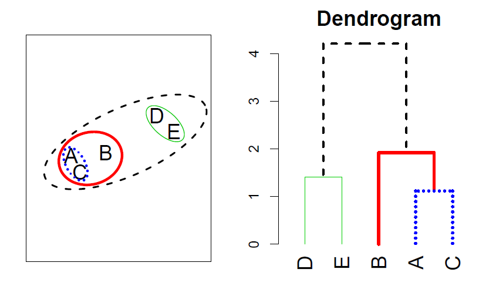
Example
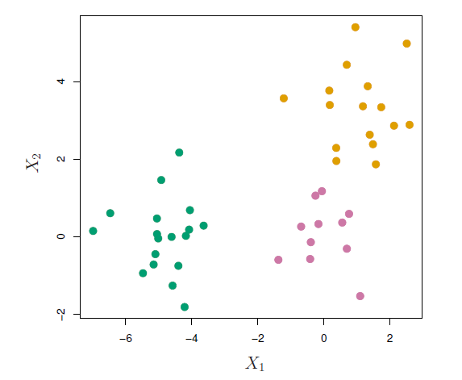
- 45 observations generated in 2-dimensional space.
- In reality there are three distinct classes, shown in separate colors.
- However, we will treat these class labels as unknown and will seek to cluster the observations in order to discover the classes from the data.
Application of hierarchical clustering

Left: Dendrogram obtained from hierarchically clustering the data from previous slide, with complete linkage and Euclidean distance.
Center: The dendrogram from the left-hand panel, cut at a height of 9 (indicated by the dashed line).
- This cut results in two distinct clusters, shown in different colors.
Right: The dendrogram from the left-hand panel, now cut at a height of 5.
- This cut results in three distinct clusters, shown in different colors.
- Note that the colors were not used in clustering, but are simply used for display purposes in this figure.
Types of linkage
| Linkage | Description |
|---|---|
| Complete | Maximal inter-cluster dissimilarity. Compute all pairwise dissimilarities between the observations in cluster A and the observations in cluster B, and record the largest of these dissimilarities. |
| Single | Minimal inter-cluster dissimilarity. Compute all pairwise dissimilarities between the observations in cluster A and the observations in cluster B, and record the smallest of these dissimilarities. |
| Average | Mean inter-cluster dissimilarity. Compute all pairwise dissimilarities between the observations in cluster A and the observations in cluster B, and record the average of these dissimilarities. |
| Centroid | Dissimilarity between the centroid for cluster A (a mean vector of length \(p\)) and the centroid for cluster B. Centroid linkage can result in undesirable inversions. |
Choice of dissimilarity measure
So far have used Euclidean distance.
An alternative is correlation-based distance which considers two observations to be similar if their features are highly correlated.
This is an unusual use of correlation, which is normally computed between variables; here it is computed between the observation profiles for each pair of observations.
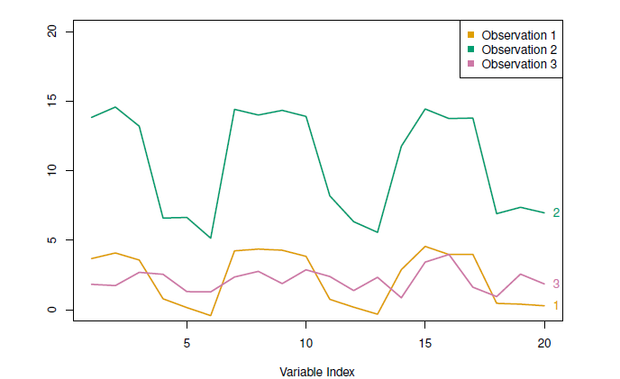
Practical issues
- Scaling of the variables matters!
- Should the observations or features first be standardized in some way?
- For instance, maybethe variables should be centered to have mean zero and scaled to have standard deviation one.
- In the case of hierarchical clustering,
- What dissimilarity measure should be used?
- What type of linkage should be used?
- How many clusters to choose? (in both \(K\)-means or hierarchical clustering).
- Difficult problem.
- No agreed-upon method.
- Which features should we use to drive the clustering?
Example: breast cancder microarray study
“Repeated observation of breast tumor subtypes in independent gene expression data sets;” Sorlie et al, PNAS 2003
Gene expression measurements for about ~ 8000 genes, for each of 88 breast cancer patients.
Average linkage, correlation metric
Clustered samples using 500 intrinsic genes: each woman was measured before and after chemotherapy.
- Intrinsic genes have smallest within/between variation.
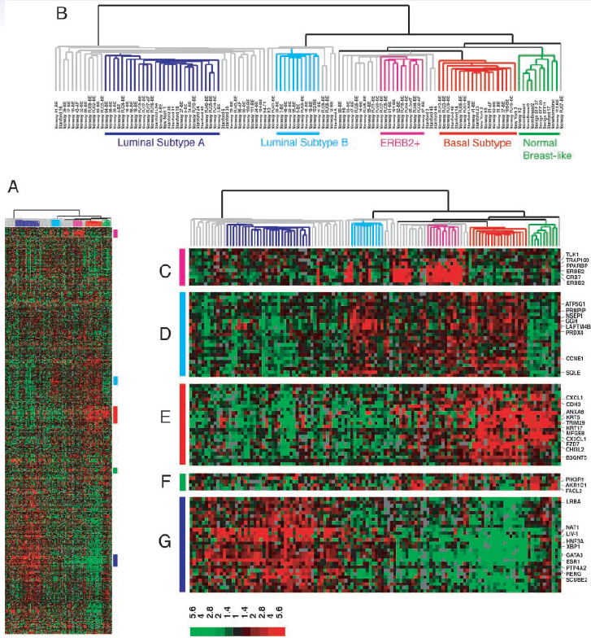
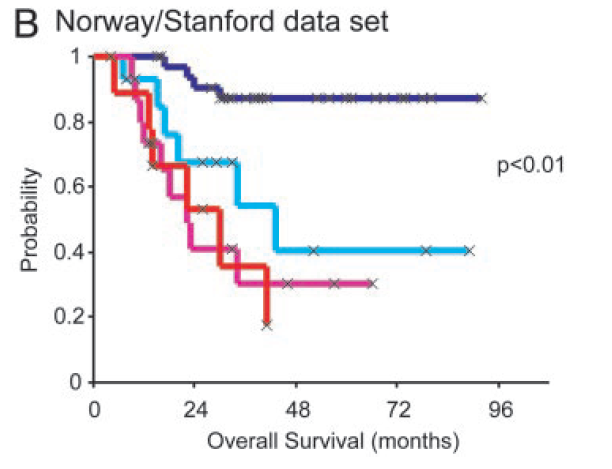
Conclusions
Unsupervised learning is important for understanding the variation and grouping structure of a set of unlabeled data, and can be a useful pre-processor for supervised learning.
It is intrinsically more difficult than supervised learning because there is no gold standard (like an outcome variable) and no single objective (like test set accuracy).
It is an active field of research, with many recently developed tools such as self-organizing maps, independent components analysis and spectral clustering.
Example - beer
- Beer brands using hclust() function of stat package, which is a default R package.
hc.single <- hclust(dist(beer), method = "single") # single linkage
hc.complete <- hclust(dist(beer), method = "complete") # complete
hc.average <- hclust(dist(beer), method = "average")
hc.centroid <- hclust(dist(beer), method = "centroid")
## dentrogram plots
par(mfrow = c(2, 2))
plot(hc.single, main = "Single Linkage", xlab = "", sub = "", cex = .8, cex.main = .9)
plot(hc.complete, main = "Complete Linkage", xlab = "", sub = "", cex = .8, cex.main = .9)
plot(hc.average, main = "Average Linkage", xlab = "", sub = "", cex = .8, cex.main = .9)
plot(hc.centroid, main = "Centroid", xlab = "", sub = "", cex = .8, cex.main = .9)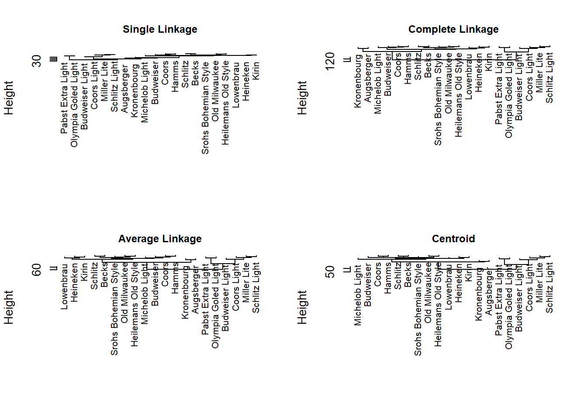
In the single linkage no obvious structure.
The other methods produce two main clusters of ordinary and light beers.